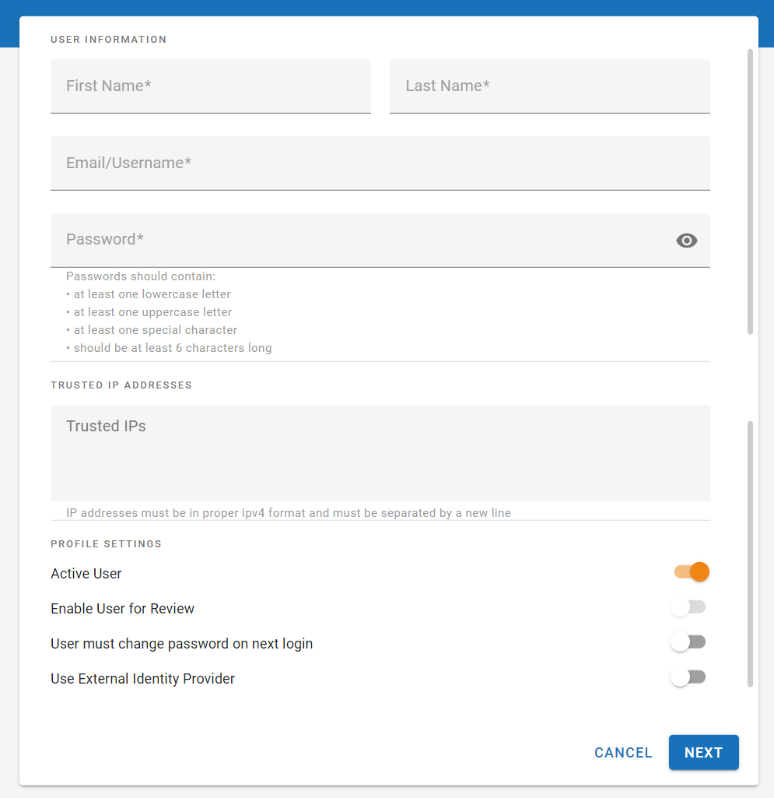

Click the button at the top of the screen. The Create New User page appears.
|
|
Note: You also have the option to import users from a .CSV or .JSON file and to import users from an active directory. See |

Enter all user details on the Setup User Details step (asterisks indicate required entries).

- User names must be email addresses.
- Passwords
must include at least:
- six characters,
- one uppercase and one lowercase character,
- one non-alphanumeric character.
The Active User option is selected by default. Otherwise, clear the option. If Active User is cleared, the user cannot log in to
The Use External Identity Provider option is cleared by default. Select this option to enable the user to log in to
|
|
Note: When this option is selected, the user can no longer log in to |
Optional: On the Assign to Group step, users may be assigned to one or more previously created groups. The groups are sorted alphabetically. To search for a group, click the magnifying glass icon and begin to fill in the search field to return those groups that most closely match. To assign the new user to groups, select the needed groups from the list. Groups that have been selected are highlighted in blue.
|
|
Note: Users are not assigned permissions directly. Rather, permissions are set at the group level and filter down to the users assigned to them. Similarly, users cannot be assigned to cases directly. They must first be assigned to groups, and those groups assigned to cases. To learn more about users and groups, see |
Repeat
this procedure for all